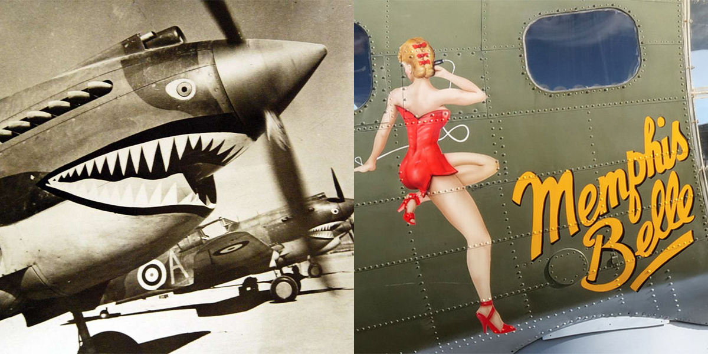

제2차 세계대전 당시, 군용 탈 것들은 단순한 군수품을 넘어
하나의 매력적인 예술 작품이기도 하였습니다.
마치 개인의 애장품을 커스텀하듯, 전투기나 전차들은 강렬한 맹수의 얼굴부터 매혹적인 여성,
그리고 익살스러운 유명 만화 캐릭터와 같은 그림으로 꾸며져
각각의 기체와 차체마다 특별한 모습을 보여주었습니다.
이러한 현상은 전쟁 초기, 전투기의 앞 부분 'Nose'에 위압적인 이미지를 그리는 행위가 'Nose Art'라 불리는 것으로부터 시작했습니다. 그 후 남성 위주로 구성된 강압적인 군대 특성상 사기 진작이나 긴장 해소를 위해 사물함에 붙이던 'Pin-Up Girl' 같은 성적인 여성 이미지가 전투기의 외관에 그려졌고, 또 만화 캐릭터나 다양한 레터링이 사용되면서 화려하고 다채로운 디자인의 노즈 아트가 탄생했습니다. 당시 전쟁 선전 및 훈련 영화를 제작한 디즈니의 전문 아티스트들이 노즈 아트 작업에 참여했던 것도 재밌는 일화 중 하나입니다.
